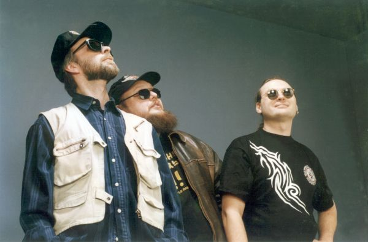

Пресс-релиз ABC:
В прошлом десятилетии, когда средний советский гражданин получал зарплату 150 рублей, проезд в городском траспорте стоил всего 5 копеек, задолго до появления в Москве первых ночных клубов и задолго до того, как родились на свет всем теперь известные звезды столичного блюза "Crossroads", "Stainless Blues Band" и другие, жила-была троица московских музыкантов под названием "Вольный Стиль".
Возможно, для времен позднего застоя и ранней перестройки их музыка и облик слишком оправдывали свое название. Поэтому группа была широко известна в основном лишь в узких кругах своих друзей. Но те, кто хоть раз слышал "Вольный Стиль", вспоминали его исключительно добрым словом. В музыке этого трио гармонично переплетался дух "Grand Funk RailRoad", "ZZ top", "Status Quo", "Rolling Stones" и др. Неистовая энергия гитариста в сочетании с плотной ритм-секцией заводила зрителей с пол-оборота.
За свою непродолжительную жизнь команда все же успела записать несколько своих песен на одной из самых престижных в то время студий - в Московском Дворце Молодежи. По иронии судьбы до сих пор ее записи можно услышать на волнах радиостанций Норвегии.
На первом фестивале "Живой Звук" во Дворце Молодежи всем известный Владимир Кузьмин подарил гитаристу "ВС" свой красный "стратокастер".
Группа учавствовала во множестве больших и маленьких фестивалей и конкурсов, в том числе - международных, которые теперь за давностью лет не имеют никакого значения, а также на словах и страницах договоров объездила, как минимум, половину земного шара.
К сожалению, последние шесть лет о "Вольном Стиле" можно было говорить лишь в прошедшем времени. Идейный вдохновитель - гитарист Борис Булкин, когда-то работавший в первом составе "Лиги Блюза", теперь играет в "Stainless Blues Band", барабанщик Александр Торопкин вот уже пять лет работает с Сергеем Вороновым в "Crossroads". Бас-гитарист Юрий Корепанов теперь - режиссер Арбат Блюз Клуба. Каждый занят своим делом.
Но совсем недавно какой-то неведомый импульс побудил музыкантов собраться, и, хочется верить, что у "Вольного Стиля" кроме прошлого появилось будущее, в котором их ждет много новых слушателей и друзей.
Вольный стиль в интернете: http://www.copris.com/vs/
borisbulkin.ru - сайт Бориса Булкина
Интервью Олега "Мистер Твистер" Усманова для газеты Музоон.